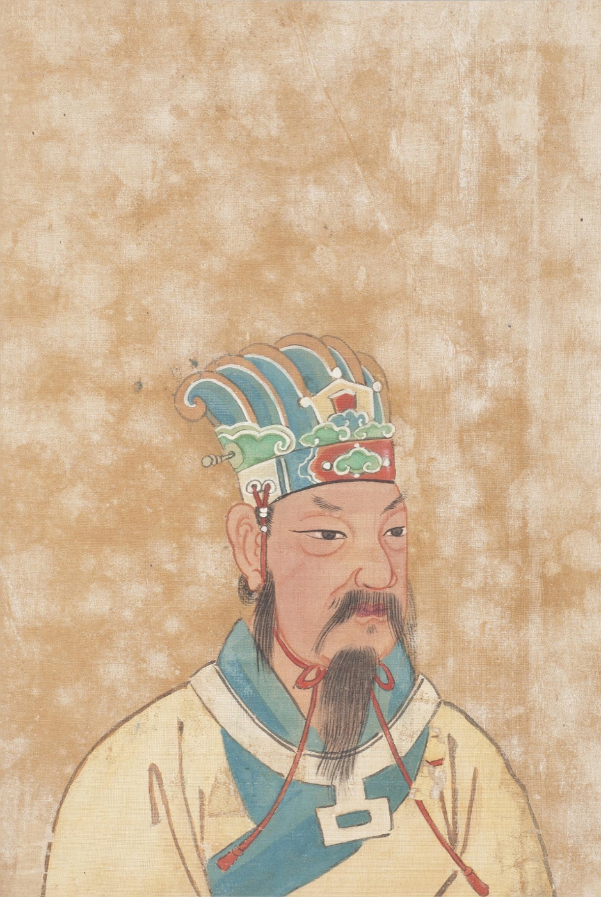

Задача трёх тел · глава 7 из 35
«Задача трёх тел»: Чжоуский Вэнь-ван и долгая ночь

Кратко
Ван Мяо надевает V-костюм и входит в игру «Задача трёх тел», которую видел у Шэнь Юйфэй. Мир игры похож на древний Китай, но солнце здесь ведёт себя безумно: «эры хаоса» с непредсказуемыми днями, жаром и стужей сменяются редкими «стабильными эрами». Чтобы пережить хаос, люди этого мира умеют «обезвоживаться» — высыхать в свёрток, похожий на кожу, и храниться, пока не придут лучшие времена. Мудрец Вэнь-ван гадает по «И цзин» и предсказывает наступление стабильной эры; тиран Чжоу отдаёт приказ о «регидратации». Но солнце не встаёт, на небе загораются три «летучие звезды», и наступает ночь длиной в сорок восемь лет. Цивилизация № 137 гибнет.
Главные моменты
- V-костюм и ник Хайжэнь: Ван Мяо становится игроком.
- Обезвоживание — жуткий и гениальный способ выжить в мире без расписания.
- Вэнь-ван пытается предсказать солнце мистикой — и ошибается.
- Три «летучие звезды» и долгая ночь: цивилизация замерзает насмерть.
Значение
Значение главы может забегать вперёд — показать
Первый из семи игровых эпизодов, сквозь которые Ван (и читатель) постепенно разгадывает устройство странного мира. Игра оказывается головоломкой: понять, почему солнце не подчиняется законам.
Наука в этой главе
- Обезвоживание отчасти правда